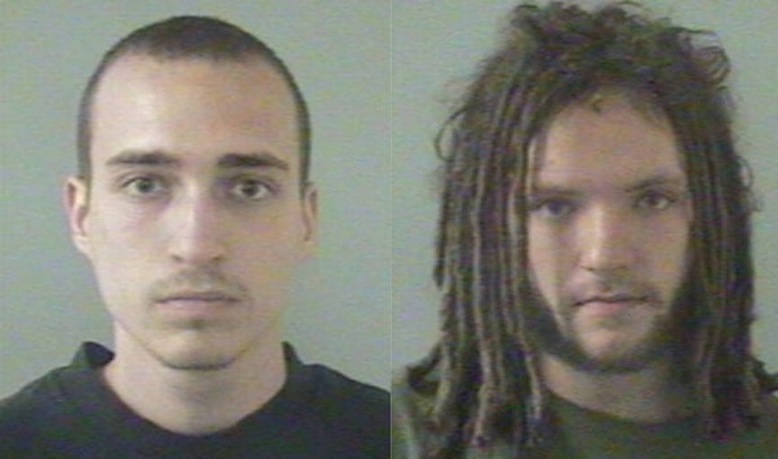
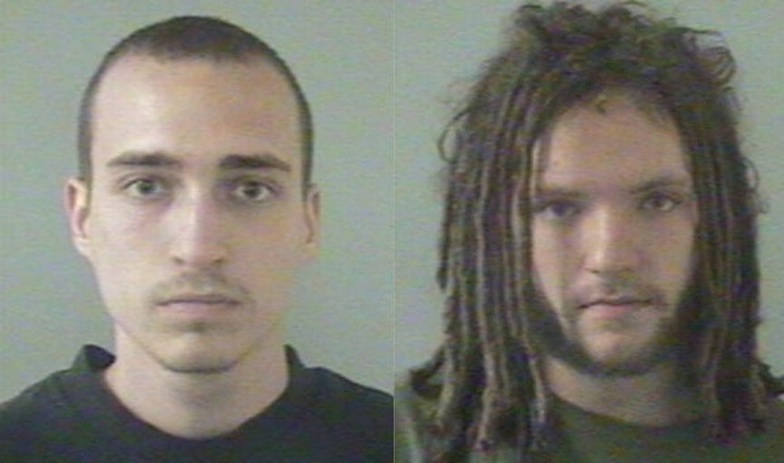

El Dorado Man Sentenced to Ten Years for Selling 25i-NBOMe
A U.S. District Judge sentenced Elijah Richter, 28, of Camino, California, to ten years in prison for the distribution of 25i-NBOMe that resulted in a fatal overdose. Richter, according to court documents, had purchased 25i and other substances on the now defunct Silk Road darkweb marketplace.
In 2012, Richter had ordered a “number of doses” of25i from a Silk Road vendor in Europe. The vendor had shipped the product to Richter’s residence in El Dorado county. Jesse Roberts, an associate of Richter, picked up the product and resold doses to customers in and around El Dorado county.

One of the customers, a juvenile identified in court documents as “A.A.,” purchased and ingested four doses of the drug. Unlike most well-known psychedelic substances, 25i is potentially lethal in high doses and is one of the most dangerous NBOMe compounds. Although experienced users will know the difference between an NBOMe tab and an LSD tab, new users are much more likely to mistake the substances. This is especially true when a dealer sells NBOMe compounds as LSD.
A.A. fatally overdosed on four tabs of 25i in late 2012. The Drug Enforcement Administration and the El Dorado County Sheriff’s Office investigated the juvenile’s death.
They executed a search warrant at Richer’s home and recovered:
2.61 grams of MDMA; three digital scales; 3.81 grams of suspected hash oil; 42.25 grams of marijuana; 89 pink colored tabs of suspected 25i-nBome on blotter; seven additional tabs of suspected 25i-nBome in aluminum foil; a handwritten list of drugs and their proper dosage units.
Richter later admitted to supplying the hits of n25i-nBome that killed the 16-year-old. Roberts was prosecuted by the El Dorado County District Attorney’s Office for one count of involuntary manslaughter. On March 3, 2017, a judge sentenced Roberts to six years in prison.
In January 2020, Richter pleaded guilty to a single count of distribution of a controlled substance causing the death of a person. U.S. District Judge Kimberly J. Mueller, on May 5, sentenced Richter to ten years in federal prison.
In 2012, Richter had ordered a “number of doses” of25i from a Silk Road vendor in Europe. The vendor had shipped the product to Richter’s residence in El Dorado county. Jesse Roberts, an associate of Richter, picked up the product and resold doses to customers in and around El Dorado county.

Roberts and Richter in their booking photos
One of the customers, a juvenile identified in court documents as “A.A.,” purchased and ingested four doses of the drug. Unlike most well-known psychedelic substances, 25i is potentially lethal in high doses and is one of the most dangerous NBOMe compounds. Although experienced users will know the difference between an NBOMe tab and an LSD tab, new users are much more likely to mistake the substances. This is especially true when a dealer sells NBOMe compounds as LSD.
A.A. fatally overdosed on four tabs of 25i in late 2012. The Drug Enforcement Administration and the El Dorado County Sheriff’s Office investigated the juvenile’s death.
They executed a search warrant at Richer’s home and recovered:
Richter later admitted to supplying the hits of n25i-nBome that killed the 16-year-old. Roberts was prosecuted by the El Dorado County District Attorney’s Office for one count of involuntary manslaughter. On March 3, 2017, a judge sentenced Roberts to six years in prison.
In January 2020, Richter pleaded guilty to a single count of distribution of a controlled substance causing the death of a person. U.S. District Judge Kimberly J. Mueller, on May 5, sentenced Richter to ten years in federal prison.